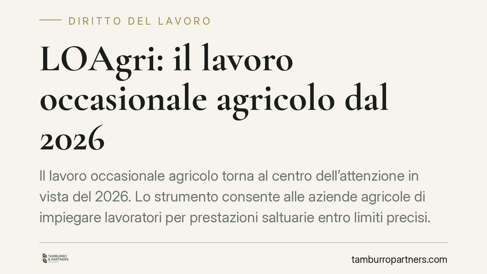

LOAgri: il lavoro occasionale agricolo dal 2026
Il lavoro occasionale agricolo torna al centro dell'attenzione in vista del 2026. Lo strumento consente alle aziende agricole di impiegare lavoratori per prestazioni saltuarie entro limiti precisi. Prima di programmare le campagne stagionali conviene capire requisiti, tetti di giornate e obblighi contributivi, distinguendo ciò che è già disciplinato da ciò che resta in attesa di conferma normativa.

Avvertenza preliminare sulle fonti
Alcuni riferimenti citati nella fonte giornalistica — in particolare la presunta Legge 30 dicembre 2025, n. 199 (Legge di Bilancio 2026) e una circolare INPS attuativa del 2026 — non risultano, alla data di redazione, verificabili in via ufficiale. Trattiamo quindi la disciplina a regime per il 2026 come prospettica e da confermare. Le indicazioni operative solide derivano dal regime sperimentale 2023-2024, introdotto dall'art. 1, commi 343-354, della Legge n. 197/2022 (Bilancio 2023) e attuato con la Circolare INPS n. 102/2023.
Consigliamo di non assumere decisioni organizzative sulla base di cifre non ancora cristallizzate in fonti ufficiali.
Inquadramento normativo
Il lavoro occasionale agricolo è stato introdotto in via sperimentale per il biennio 2023-2024 come contratto di lavoro subordinato a tempo determinato, riservato a specifiche categorie di lavoratori e di aziende. L'INPS, con la Circolare n. 102/2023, ne ha definito modalità di instaurazione, comunicazione e gestione contributiva.
L'acronimo "LOAgri" è di uso prevalentemente mediatico e divulgativo. La riconduzione del rapporto alla figura dell'operaio a tempo determinato occasionale va letta come sintesi descrittiva: l'inquadramento tecnico-contributivo esatto dipende dalla prassi INPS applicabile e andrà verificato sulla disciplina effettivamente in vigore nell'anno di riferimento.
Il limite delle 45 giornate: un tetto sul lavoratore
Nel regime sperimentale il tetto di 45 giornate annue era riferito al singolo lavoratore, non all'azienda. Questa distinzione è operativamente rilevante: una stessa azienda agricola poteva impiegare più lavoratori occasionali nell'anno, purché ciascuno rispettasse il proprio limite individuale di 45 giornate complessive, anche se maturate presso datori diversi.
Ne discende un onere di verifica: prima dell'impiego occorre accertare le giornate già prestate dal lavoratore altrove, perché il superamento del tetto incide sulla legittimità del rapporto. Se la disciplina 2026 confermerà questa impostazione, il principio resterà valido; se la modificherà, andrà riletto.
Soggetti ammessi
Nel regime sperimentale la platea dei lavoratori era circoscritta a categorie individuate dalla norma (ad esempio disoccupati, percettori di determinate prestazioni e altre figure tassative), mentre sul lato datoriale lo strumento era riservato alle aziende agricole con precisi requisiti dimensionali.
L'eventuale ampliamento o restrizione di questa platea per il 2026 è tra gli elementi non ancora confermati. Consigliamo di trattare l'elenco dei soggetti ammessi come dato da riscontrare sulla fonte ufficiale aggiornata, prima di avviare qualsiasi rapporto.
Retribuzione e contribuzione
La retribuzione segue i minimi previsti dalla contrattazione collettiva agricola applicabile, con imputazione contributiva gestita in via semplificata attraverso le procedure telematiche INPS dedicate. L'instaurazione del rapporto presuppone comunicazioni preventive secondo le regole proprie del settore agricolo.
Anche su questo punto le aliquote e le modalità operative puntuali vanno ancorate alla circolare INPS vigente nell'anno di impiego.
Compatibilità con NASpI e pensione
Il lavoro occasionale agricolo può porre un problema di cumulo con la NASpI. La regola generale è quella della cumulabilità parziale: chi percepisce NASpI e avvia un rapporto di lavoro deve comunicare all'INPS il reddito annuo presunto derivante dalla nuova attività. In funzione di tale reddito l'indennità può essere ridotta o sospesa secondo i criteri generali della disciplina NASpI.
Non indichiamo soglie numeriche perché dipendono dall'importo dell'indennità, dal reddito prodotto e dalle regole vigenti al momento. Il principio operativo da trattenere è duplice: comunicare tempestivamente il reddito presunto ed effettuare una verifica preventiva di compatibilità per evitare indebiti. Analoghe cautele valgono per i rapporti con i trattamenti pensionistici cumulabili con redditi da lavoro.
Divieti e cautele
Restano fermi i divieti di utilizzo distorto dello strumento, in particolare per mascherare rapporti continuativi che richiederebbero forme contrattuali ordinarie. L'uso del lavoro occasionale per aggirare obblighi contrattuali o superare i limiti di giornate espone a contestazioni e riqualificazione del rapporto.
Cosa fare in concreto
- Verificate le fonti ufficiali: prima di programmare le campagne 2026, controllate il testo normativo effettivamente in vigore e l'eventuale circolare INPS attuativa, senza affidarvi a cifre non confermate.
- Accertate il tetto individuale: per ogni lavoratore, acquisite le giornate già prestate presso altri datori, così da non superare il limite riferito alla persona.
- Controllate i requisiti soggettivi: verificate che lavoratore e azienda rientrino nelle categorie ammesse dalla disciplina applicabile.
- Gestite correttamente le comunicazioni: predisponete le comunicazioni preventive e gli adempimenti contributivi secondo le procedure telematiche INPS.
- Valutate la compatibilità con NASpI: invitate i lavoratori percettori a comunicare il reddito presunto all'INPS e a effettuare una verifica preventiva di cumulabilità.
Contributo informativo a cura di Tamburro & Partners Avvocati (Avv. Giuseppe Tamburro). Non costituisce parere legale.
Ogni storia di lavoro ha i suoi tempi.
Se gestisci HR e vuoi un confronto su contenzioso, ispezioni o licenziamenti, scrivi allo studio. Ti rispondiamo entro un giorno lavorativo.